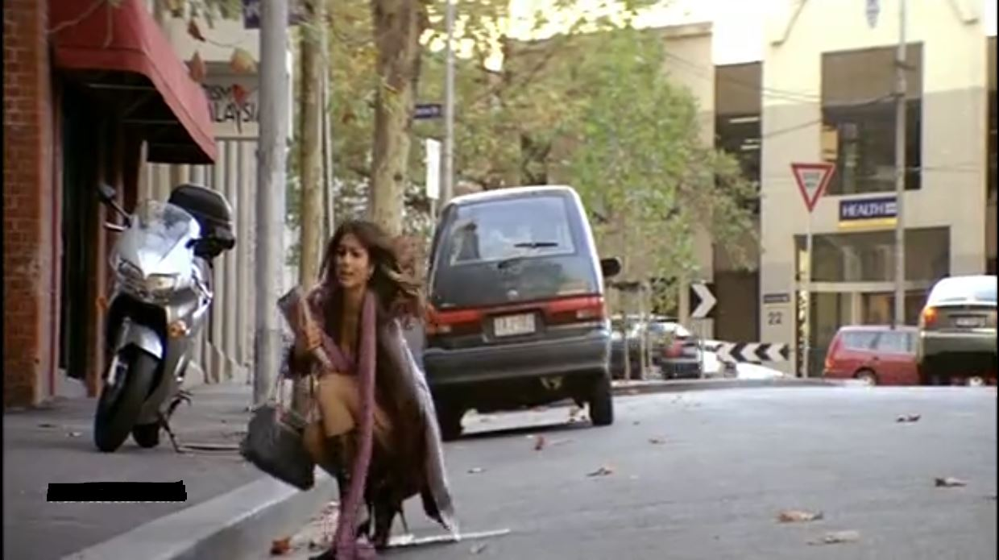
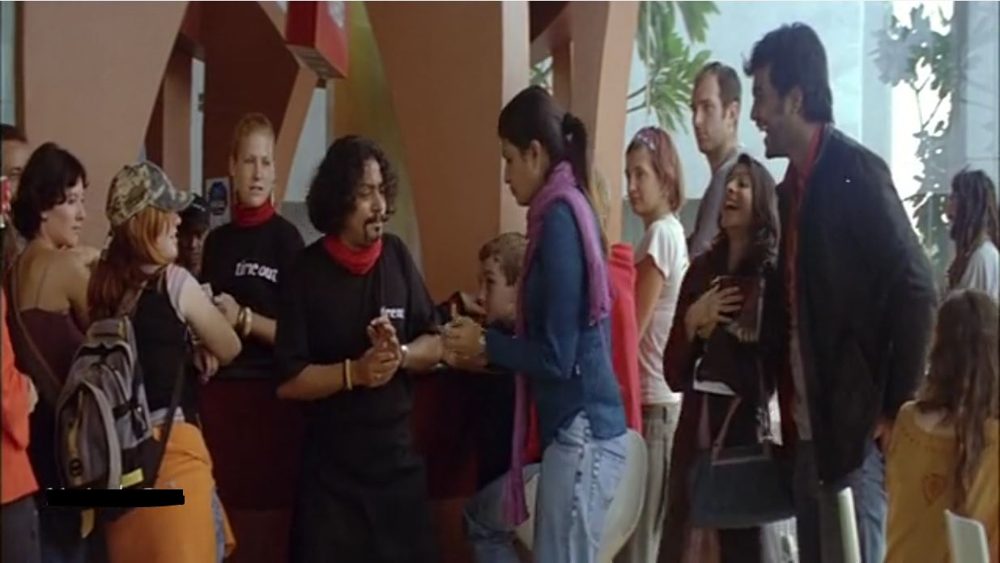
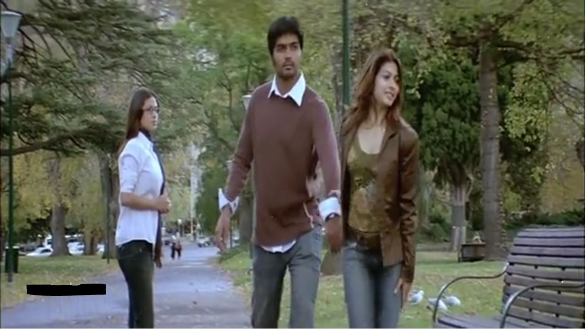
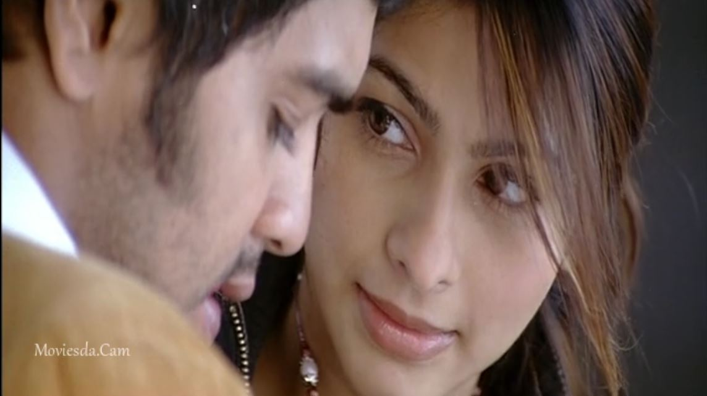
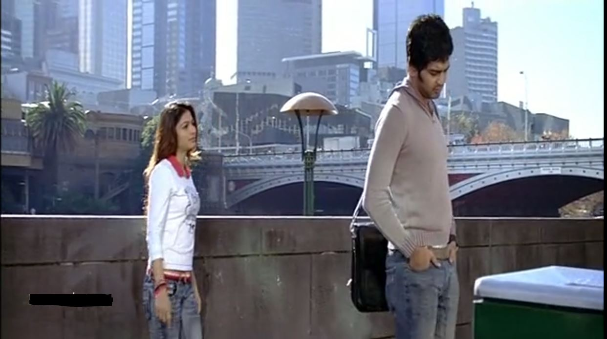
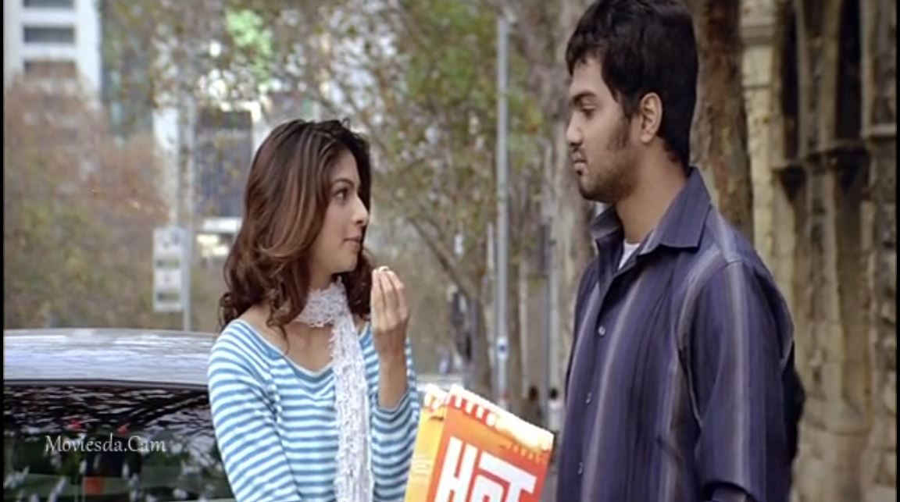
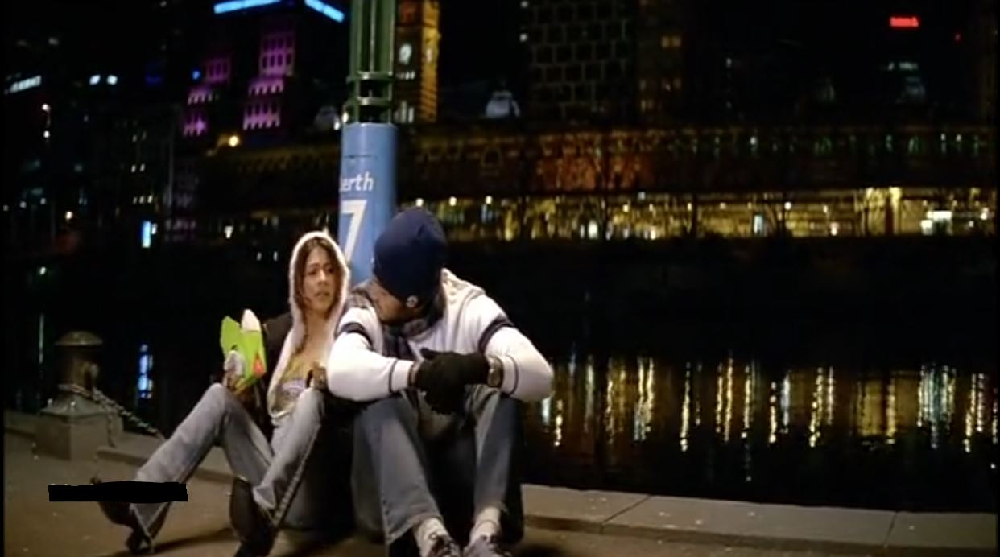
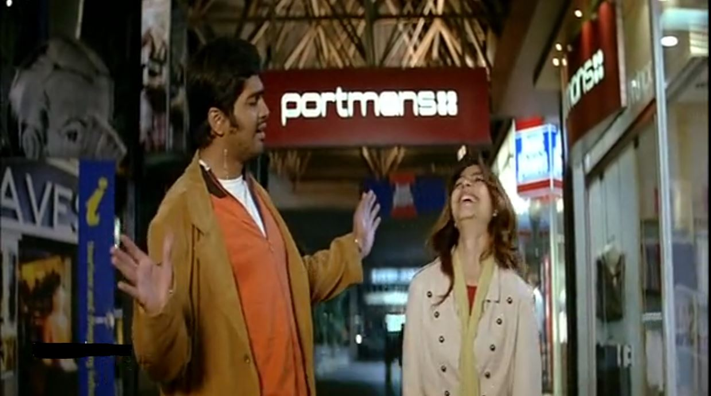
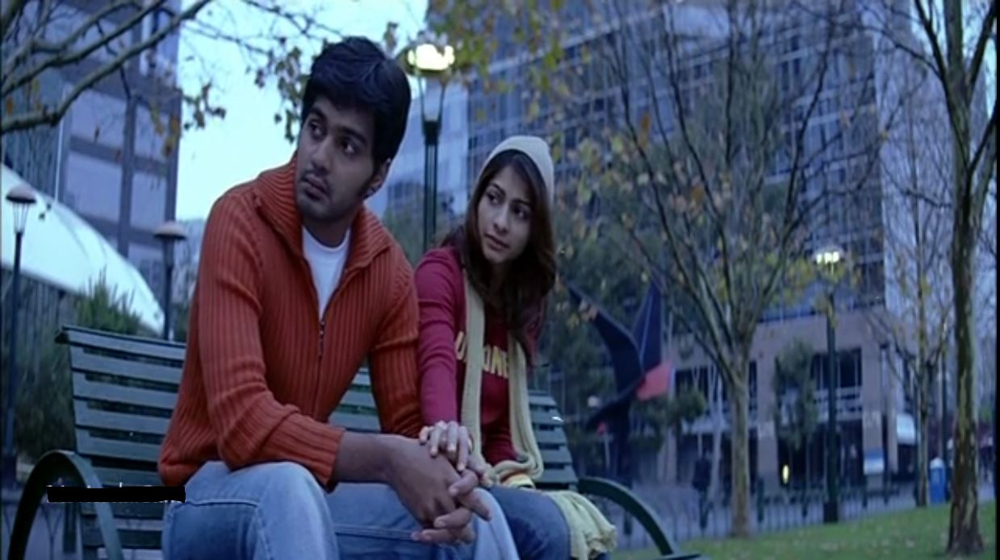

I am a huge fan of Unnale Unnale (UU) from the moment I watched it. I was on cloud nine. And I think all the youngsters and youth who watched the movie 14 years ago must have felt the same. I did hear of it when I was a kid, but the young me despised movies. Additionally, I was studying in a boarding school rendering any chance to watch movies impossible. I started watching movies sometime around my 7th grade and since then movies have been a thing close to my heart. I can immediately point out a list of movies that I love and would love to watch again and again. Recently, I have started to watch romcom movies and the one which was always on my list was Unnale Unnale (UU). This happened on a normal day at my job. Since we have the opportunity to work from home, a thought struck me and I immediately downloaded UU from the web. I know its wrong, but I could not find any official streaming platforms offering UU.
As soon as my work gave up, I sat down to watch this movie and boy, I watched it 10 times in a span of 4 days. That is 2.5 hrs X 10 times = 25 hrs! There are parts of the movie that may seem illogical, but hey, then what is the point of movies? Movies are an escape to "avoid" one's own reality. It is a fantasy. Any realist person will have a hard time watching movies like this, but to those people: Love is something that can happen anytime and anywhere and to anyone.
Coming back to UU, I was awestruck at the setting and the screenplay of the movie. Tamil movie makers in the early 2000s had to ensure there were many elements of orthodox behaviour in their movies so as to be accepted by the general audience without trash talking. But here comes Jeeva (UU's director) who makes a beautiful film of a love triangle set in Melbourne, Australia. Modern elements like girls visiting strip clubs, and girls going on-site for job opportunities (but not limited) are shown in this movie which makes it fun to watch. Anyone watching the movie now, will totally appreciate the culture shown in this film.
80% of UU was almost shot at Australia, and I have ingrained almost every scene, dialogue and most importantly the locations. I've had the habit of googling locations of movie shooting locations since teenage. I don't know why but, I always felt that locations bring the movie characters, set pieces, and emotions to life. Hence, my motive to create this website to showcase the different locations that were used in filming UU.
If you have not watched the movie, then there are (beware!) spoliers ahead.To those who enjoyed the film, enjoy the trip down memory lane. I more inclined to Deepika's and Karthik's relationship than Jhansi's. So, the list might be subjective. But I will try my best to stay objective and include all the locations shown in the film.
DISCLAIMER: This post is not to promote the movie. I am a huge fan of this movie and I am not marketing. I want everyone to feel my love toward this piece of art. And in turn, feel warmth in their hearts as well.
Shooting Locations
Most of the film was shot in the Melbourne Docklands area, VIC, Australia. Indeed, a beautiful place with skyscrapers, bridges, and in the middle of it all, is a dock on the Yarra River.
I've tried my best to list all the locations in a chronological order of events happening throughout the film.
Also to remeber, I did my own research in finding and listing the location coordinates. I did not enlist the production companies' or actors' help while researching. This took a chunk of my time, but I am grateful for it. My idea was to let everyone know these locations, so that they can live the moment by visiting these places.
1. Deepika gets her shoe stuck in a manhole

This is the scene where Deepika comes out of a library and one of her boots gets stuck in the manhole.
2. Meeting Vaithi

The union of Karthik, Deepak and Vaithi. BTW, Vaithi gets slapped in this scene from his lovely wife.
3. Deepika playfully drags Karthik away from Jhansi

Deepika interferes Karthik and Jhansi to relieve him of his sorrow and also to make Jhansi jealous.
4. Deepika pranks Jhansi in return

Jhansi makes Karthik her 'servant/boyfriend', but Deepika finds that out. In return, as revenge, she pranks Jhansi.
5. Deepika's love towards Karthik blossoms

Deepika goes out on a "date" with Karthik to an iceskating center. This is the moment where the playful and flirtatious Deepika falls in love with Karthik.
6. Deepika tries to help Karthik to win back Jhansi

Jhansi still seems disinterested in Karthik. But Karthik is not convinced yet, so Deepika steps in to "help" him. But her thoughts are the contrary: She knows that Jhansi will never understand Karthik no matter how hard he tries and the fact that she loves Karthik.
7. A cute moment between Karthik and Deepika

Deepika unbeknownst to Jhansi sends a flower boquet to Jhansi addressed from Karthik as a part of the plan to help Karthik get back Jhansi. When the duo keep waiting for Jhansi's arrival at the date location, they spend a cute moment together debating whether she'll turn up or not.
8. Karthik again enlists Deepika's help

Though Karthik becomes friends with Jhansi, their reltionship falls apart because of a voice message sent by Deepika. Kathik enlists Deepika's help again to reconcile with Jhansi. But knowing that Jhansi will never understand Karthik's love, Deepike indirectly proposes to Karthik.
9. "Romba Romba pudikum"

Jhasni, Deepika, and Karthik attend Vaithi's wedding anniversary. Later, Jhansi leaves due to her ego. Now, drunk AF, both Deepika and Karthik are talking about how much they like each other.
10. A Bittersweet moment, but she's a keeper

Jhansi leaves Melbourne to Sydney anonymously. She understood that she'll never understand Karthik and Deepika is the right girl for him. While the trio search for her (Deepika, Karthik, and Vaithi) they do not find her. Karthik gives up out of mental exhaustion, and later Deepika assures him that she still loves him.